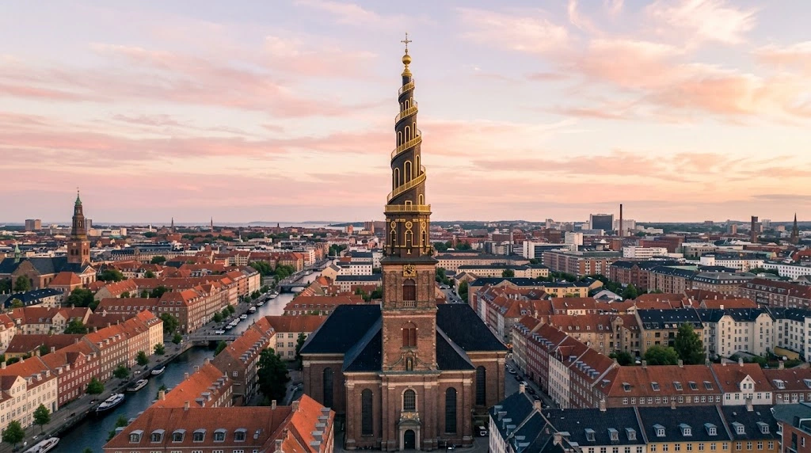

KIRKER

Historie
Københavns kirker har en lang historie, der går flere hundrede år tilbage. De ældste kirker blev
opført i middelalderen,
hvor kristendommen spillede en central rolle i samfundet. Gennem tiden er kirkerne blevet
ombygget,
udvidet og genopført
efter blandt andet brande og krige. Derfor afspejler de mange forskellige arkitektoniske
stilarter,
fra middelalderens
enkle udtryk til barokkens detaljerede udsmykninger og nyere tiders arkitektur.
Et eksempel er Grundtvigskirken, som blev opført mellem 1921 og 1940. Kirken er tegnet af
arkitekten
P.V. Jensen-Klint
og er især kendt for sin særlige arkitektur, der kombinerer gotiske former med inspiration fra
danske landsbykirker. Et
andet eksempel er Marmorkirken, hvis byggeri begyndte i 1749, men først blev færdiggjort i 1894
efter en lang pause. Den
er især kendt for sin store kuppel og imponerende arkitektur.
Kirkerne har derfor ikke kun religiøs betydning, men er også historiske monumenter, der
fortæller om
Københavns
udvikling, arkitektur og kultur gennem århundrederne.
Byens kirker i dag
I dag spiller kirkerne i København stadig en vigtig rolle i byens kultur og fællesskab. De bruges til gudstjenester, bryllupper, dåb og andre religiøse begivenheder, men også til koncerter og kulturelle arrangementer. Mange kirker fungerer samtidig som historiske seværdigheder, hvor både lokale og turister kan opleve arkitekturen og lære mere om byens historie.
Kig på karusellen nedenfor for at se nogle af de mest klassiske kirkerne i København
- 1. Grundtvigskirken - Kendt for sin imponerende gotiske arkitektur og gule mursten.
- 2. Marmorkirken - Berømt for sin store kuppel og klassiske arkitektur.
- 3. Vor Frelsers Kirke - Kendt for sit karakteristiske spir med en udvendig vindeltrappe
- 4. Vor Frue Kirke - Københavns domkirke med en lang historie.
- 5. Holmens Kirke - En historisk kirke med forbindelse til den danske flåde.
- 6. Sankt Jakobs Kirke - Kendt for sin nygotiske arkitektur.
- 7. Christians Kirke - En elegant kirke med et særligt kirkerum og klassisk arkitektur.